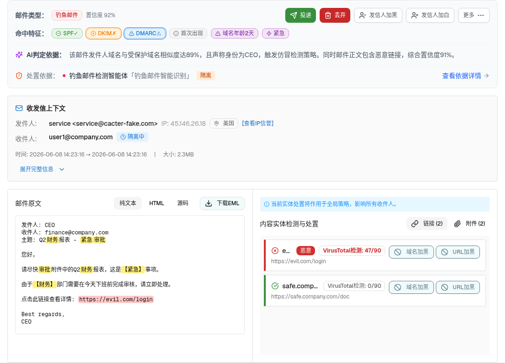

<!DOCTYPE html>
<html lang="zh-CN">
<head>
<meta charset="UTF-8">
<meta name="viewport" content="width=device-width, initial-scale=1.0">
<title>层级 11：抽屉·概览与处置（单投递收件人） - 邮件处置中心</title>
<link rel="stylesheet" href="../assets/demo-app.css">
<link rel="stylesheet" href="../assets/spec-style.css">
<style>
  .pass{color:#15803d;font-weight:600;} .bad{color:#b91c1c;font-weight:600;} .warn{color:#a16207;font-weight:600;}
  .stage-1{color:#3b82f6;} .stage-2{color:#06b6d4;} .stage-3{color:#f59e0b;} .stage-4{color:#f43f5e;} .stage-5{color:#10b981;}
  .excluded-note{border-left:4px solid #94a3b8;background:#f1f5f9;padding:1rem 1.25rem;border-radius:.5rem;margin:1rem 0;font-size:.9rem;}
  .kbd{font-family:var(--font-mono);background:#e2e8f0;border-radius:4px;padding:0 .3rem;font-size:.8em;}
  table.spec-table.compact th, table.spec-table.compact td{padding:.4rem .55rem;font-size:.82rem;}

  .component-preview [data-radix-popper-content-wrapper]{position:static!important;transform:none!important;margin-top:.5rem;}
  .component-preview [role="dialog"]{position:static!important;transform:none!important;translate:none!important;left:auto!important;top:auto!important;max-width:32rem;margin:1rem auto;box-shadow:0 8px 24px rgba(0,0,0,.14);}
  .component-preview [data-radix-popper-content-wrapper] [role="dialog"]{box-shadow:none;}
  .component-preview [data-slot="sheet-overlay"],.component-preview [data-radix-dialog-overlay]{display:none!important;}
  .component-preview{max-height:none;}
  .preview-note{font-size:.75rem;color:#64748b;margin:.25rem 0 .75rem;}

</style>
</head>
<body>
<nav class="layer-nav">
<a href="./index.html#components">← 返回主文件</a>
<a href="./layer-10-similarity-mode.html">← L10 相似模式</a>
<a href="./layer-12-drawer-overview-matrix.html">L12 多投矩阵 →</a>
</nav>
<header class="spec-header"><h1>交互层级 11：抽屉·概览与处置（单投递收件人）</h1><table class="spec-table"><thead><tr><th>属性</th><th>值</th></tr></thead><tbody><tr><td>所属组件</td><td>2.3 详情抽屉 Detail Drawer</td></tr><tr><td>主文件</td><td><a href="./index.html#components">email-handling-disposal-center/index.html</a></td></tr><tr><td>触发路径</td><td>表格行『查看』→ 打开 80vw 抽屉，默认落在「概览与处置」（此处为单投钓鱼邮件 inv-16）</td></tr><tr><td>范围说明</td><td>「规则命中统计」不在本规格范围（见主文件说明块）</td></tr></tbody></table></header>
<section class="interaction-layer">
<div class="component-preview"><p class="preview-hint"></p><p class="preview-note">下方内嵌为单投概览模块真实 HTML。</p>
<div id="section-overview" class="border-b border-gray-200"><div class="bg-white dark:bg-gray-800"><div class="p-4 border rounded-md mx-4 mt-4 bg-gray-50 border-gray-200"><div class="flex items-center justify-between gap-4 flex-wrap"><div class="flex items-center gap-2"><span class="text-sm font-semibold text-gray-600">邮件类型：</span><span data-slot="badge" class="inline-flex items-center justify-center rounded-md px-2 py-0.5 text-xs font-medium w-fit whitespace-nowrap shrink-0 [&amp;&gt;svg]:size-3 [&amp;&gt;svg]:pointer-events-none focus-visible:border-ring focus-visible:ring-ring/50 focus-visible:ring-[3px] aria-invalid:ring-destructive/20 dark:aria-invalid:ring-destructive/40 aria-invalid:border-destructive transition-[color,box-shadow] overflow-hidden [a&amp;]:hover:bg-accent [a&amp;]:hover:text-accent-foreground gap-1 border bg-red-50 text-red-700 border-red-200">钓鱼邮件</span><span class="text-xs text-gray-500">置信度 92%</span></div><div class="flex items-center gap-2 flex-wrap"><button data-slot="tooltip-trigger" class="inline-flex items-center justify-center whitespace-nowrap font-medium transition-all disabled:pointer-events-none disabled:opacity-50 [&amp;_svg]:pointer-events-none [&amp;_svg:not([class*='size-'])]:size-4 shrink-0 [&amp;_svg]:shrink-0 outline-none focus-visible:border-ring focus-visible:ring-ring/50 focus-visible:ring-[3px] aria-invalid:ring-destructive/20 dark:aria-invalid:ring-destructive/40 aria-invalid:border-destructive rounded-md px-3 has-[&gt;svg]:px-2.5 gap-1.5 text-xs h-8 bg-[#388E3C] hover:bg-[#2E7D32] text-white" data-state="closed"><svg xmlns="http://www.w3.org/2000/svg" width="24" height="24" viewBox="0 0 24 24" fill="none" stroke="currentColor" stroke-width="2" stroke-linecap="round" stroke-linejoin="round" class="lucide lucide-send w-3.5 h-3.5"><path d="M14.536 21.686a.5.5 0 0 0 .937-.024l6.5-19a.496.496 0 0 0-.635-.635l-19 6.5a.5.5 0 0 0-.024.937l7.93 3.18a2 2 0 0 1 1.112 1.11z"></path><path d="m21.854 2.147-10.94 10.939"></path></svg>投递</button><button data-slot="tooltip-trigger" class="inline-flex items-center justify-center whitespace-nowrap font-medium transition-all disabled:pointer-events-none disabled:opacity-50 [&amp;_svg]:pointer-events-none [&amp;_svg:not([class*='size-'])]:size-4 shrink-0 [&amp;_svg]:shrink-0 outline-none focus-visible:border-ring focus-visible:ring-ring/50 focus-visible:ring-[3px] aria-invalid:ring-destructive/20 dark:aria-invalid:ring-destructive/40 aria-invalid:border-destructive rounded-md px-3 has-[&gt;svg]:px-2.5 gap-1.5 text-xs h-8 bg-[#C62828] hover:bg-[#B71C1C] text-white" data-state="closed"><svg xmlns="http://www.w3.org/2000/svg" width="24" height="24" viewBox="0 0 24 24" fill="none" stroke="currentColor" stroke-width="2" stroke-linecap="round" stroke-linejoin="round" class="lucide lucide-trash2 w-3.5 h-3.5"><path d="M3 6h18"></path><path d="M19 6v14c0 1-1 2-2 2H7c-1 0-2-1-2-2V6"></path><path d="M8 6V4c0-1 1-2 2-2h4c1 0 2 1 2 2v2"></path><line x1="10" x2="10" y1="11" y2="17"></line><line x1="14" x2="14" y1="11" y2="17"></line></svg>丢弃</button><button data-slot="tooltip-trigger" class="inline-flex items-center justify-center whitespace-nowrap font-medium transition-all disabled:pointer-events-none disabled:opacity-50 [&amp;_svg]:pointer-events-none [&amp;_svg:not([class*='size-'])]:size-4 shrink-0 [&amp;_svg]:shrink-0 outline-none focus-visible:border-ring focus-visible:ring-ring/50 focus-visible:ring-[3px] aria-invalid:ring-destructive/20 dark:aria-invalid:ring-destructive/40 aria-invalid:border-destructive border shadow-xs hover:bg-accent dark:bg-input/30 dark:border-input dark:hover:bg-input/50 rounded-md px-3 has-[&gt;svg]:px-2.5 gap-1.5 text-xs h-8 border-gray-300 text-gray-600 hover:border-blue-500 hover:text-blue-600 bg-white" data-state="closed"><svg xmlns="http://www.w3.org/2000/svg" width="24" height="24" viewBox="0 0 24 24" fill="none" stroke="currentColor" stroke-width="2" stroke-linecap="round" stroke-linejoin="round" class="lucide lucide-user-minus w-3.5 h-3.5"><path d="M16 21v-2a4 4 0 0 0-4-4H6a4 4 0 0 0-4 4v2"></path><circle cx="9" cy="7" r="4"></circle><line x1="22" x2="16" y1="11" y2="11"></line></svg>发信人加黑</button><button data-slot="tooltip-trigger" class="inline-flex items-center justify-center whitespace-nowrap font-medium transition-all disabled:pointer-events-none disabled:opacity-50 [&amp;_svg]:pointer-events-none [&amp;_svg:not([class*='size-'])]:size-4 shrink-0 [&amp;_svg]:shrink-0 outline-none focus-visible:border-ring focus-visible:ring-ring/50 focus-visible:ring-[3px] aria-invalid:ring-destructive/20 dark:aria-invalid:ring-destructive/40 aria-invalid:border-destructive border shadow-xs hover:bg-accent dark:bg-input/30 dark:border-input dark:hover:bg-input/50 rounded-md px-3 has-[&gt;svg]:px-2.5 gap-1.5 text-xs h-8 border-gray-300 text-gray-600 hover:border-blue-500 hover:text-blue-600 bg-white" data-state="closed"><svg xmlns="http://www.w3.org/2000/svg" width="24" height="24" viewBox="0 0 24 24" fill="none" stroke="currentColor" stroke-width="2" stroke-linecap="round" stroke-linejoin="round" class="lucide lucide-user-plus w-3.5 h-3.5"><path d="M16 21v-2a4 4 0 0 0-4-4H6a4 4 0 0 0-4 4v2"></path><circle cx="9" cy="7" r="4"></circle><line x1="19" x2="19" y1="8" y2="14"></line><line x1="22" x2="16" y1="11" y2="11"></line></svg>发信人加白</button><button data-slot="tooltip-trigger" class="inline-flex items-center justify-center whitespace-nowrap font-medium transition-all disabled:pointer-events-none disabled:opacity-50 [&amp;_svg]:pointer-events-none [&amp;_svg:not([class*='size-'])]:size-4 shrink-0 [&amp;_svg]:shrink-0 outline-none focus-visible:border-ring focus-visible:ring-ring/50 focus-visible:ring-[3px] aria-invalid:ring-destructive/20 dark:aria-invalid:ring-destructive/40 aria-invalid:border-destructive border shadow-xs hover:bg-accent hover:text-accent-foreground dark:bg-input/30 dark:border-input dark:hover:bg-input/50 rounded-md px-3 has-[&gt;svg]:px-2.5 gap-1.5 text-xs h-8 border-gray-300 text-gray-600 bg-white" type="button" id="radix-_r_k_" aria-haspopup="menu" aria-expanded="false" data-state="closed">更多<svg xmlns="http://www.w3.org/2000/svg" width="24" height="24" viewBox="0 0 24 24" fill="none" stroke="currentColor" stroke-width="2" stroke-linecap="round" stroke-linejoin="round" class="lucide lucide-ellipsis w-3.5 h-3.5"><circle cx="12" cy="12" r="1"></circle><circle cx="19" cy="12" r="1"></circle><circle cx="5" cy="12" r="1"></circle></svg></button></div></div><div class="flex items-center gap-2 mt-3 flex-wrap"><span class="text-sm font-semibold text-gray-600">命中特征：</span><span data-slot="tooltip-trigger" class="inline-flex items-center justify-center rounded-md px-2 py-0.5 text-xs font-medium w-fit whitespace-nowrap shrink-0 [&amp;&gt;svg]:size-3 [&amp;&gt;svg]:pointer-events-none focus-visible:border-ring focus-visible:ring-ring/50 focus-visible:ring-[3px] aria-invalid:ring-destructive/20 dark:aria-invalid:ring-destructive/40 aria-invalid:border-destructive transition-[color,box-shadow] overflow-hidden [a&amp;]:hover:bg-accent [a&amp;]:hover:text-accent-foreground gap-1 cursor-help border bg-[#E8F5E9] text-[#388E3C] border-[#A5D6A7]" data-state="closed"><svg xmlns="http://www.w3.org/2000/svg" width="24" height="24" viewBox="0 0 24 24" fill="none" stroke="currentColor" stroke-width="2" stroke-linecap="round" stroke-linejoin="round" class="lucide lucide-circle-check-big w-3 h-3"><path d="M21.801 10A10 10 0 1 1 17 3.335"></path><path d="m9 11 3 3L22 4"></path></svg>SPF✓</span><span data-slot="tooltip-trigger" class="inline-flex items-center justify-center rounded-md px-2 py-0.5 text-xs font-medium w-fit whitespace-nowrap shrink-0 [&amp;&gt;svg]:size-3 [&amp;&gt;svg]:pointer-events-none focus-visible:border-ring focus-visible:ring-ring/50 focus-visible:ring-[3px] aria-invalid:ring-destructive/20 dark:aria-invalid:ring-destructive/40 aria-invalid:border-destructive transition-[color,box-shadow] overflow-hidden [a&amp;]:hover:bg-accent [a&amp;]:hover:text-accent-foreground gap-1 cursor-help border bg-[#FFF3E0] text-[#F57C00] border-[#FFCC80] ring-1 ring-offset-1" data-state="closed"><svg xmlns="http://www.w3.org/2000/svg" width="24" height="24" viewBox="0 0 24 24" fill="none" stroke="currentColor" stroke-width="2" stroke-linecap="round" stroke-linejoin="round" class="lucide lucide-circle-x w-3 h-3"><circle cx="12" cy="12" r="10"></circle><path d="m15 9-6 6"></path><path d="m9 9 6 6"></path></svg>DKIM✗</span><span data-slot="tooltip-trigger" class="inline-flex items-center justify-center rounded-md px-2 py-0.5 text-xs font-medium w-fit whitespace-nowrap shrink-0 [&amp;&gt;svg]:size-3 [&amp;&gt;svg]:pointer-events-none focus-visible:border-ring focus-visible:ring-ring/50 focus-visible:ring-[3px] aria-invalid:ring-destructive/20 dark:aria-invalid:ring-destructive/40 aria-invalid:border-destructive transition-[color,box-shadow] overflow-hidden [a&amp;]:hover:bg-accent [a&amp;]:hover:text-accent-foreground gap-1 cursor-help border bg-[#E3F2FD] text-[#1976D2] border-[#90CAF9] ring-1 ring-offset-1" data-state="closed"><svg xmlns="http://www.w3.org/2000/svg" width="24" height="24" viewBox="0 0 24 24" fill="none" stroke="currentColor" stroke-width="2" stroke-linecap="round" stroke-linejoin="round" class="lucide lucide-triangle-alert w-3 h-3"><path d="m21.73 18-8-14a2 2 0 0 0-3.48 0l-8 14A2 2 0 0 0 4 21h16a2 2 0 0 0 1.73-3"></path><path d="M12 9v4"></path><path d="M12 17h.01"></path></svg>DMARC⚠</span><span data-slot="tooltip-trigger" class="inline-flex items-center justify-center rounded-md border px-2 py-0.5 text-xs font-medium w-fit whitespace-nowrap shrink-0 [&amp;&gt;svg]:size-3 [&amp;&gt;svg]:pointer-events-none focus-visible:border-ring focus-visible:ring-ring/50 focus-visible:ring-[3px] aria-invalid:ring-destructive/20 dark:aria-invalid:ring-destructive/40 aria-invalid:border-destructive transition-[color,box-shadow] overflow-hidden [a&amp;]:hover:bg-accent [a&amp;]:hover:text-accent-foreground bg-[#F5F5F5] text-[#616161] border-[#E0E0E0] gap-1 cursor-help" data-state="closed"><svg xmlns="http://www.w3.org/2000/svg" width="24" height="24" viewBox="0 0 24 24" fill="none" stroke="currentColor" stroke-width="2" stroke-linecap="round" stroke-linejoin="round" class="lucide lucide-info w-3 h-3"><circle cx="12" cy="12" r="10"></circle><path d="M12 16v-4"></path><path d="M12 8h.01"></path></svg>首次出现</span><span data-slot="tooltip-trigger" class="inline-flex items-center justify-center rounded-md border px-2 py-0.5 text-xs font-medium w-fit whitespace-nowrap shrink-0 [&amp;&gt;svg]:size-3 [&amp;&gt;svg]:pointer-events-none focus-visible:border-ring focus-visible:ring-ring/50 focus-visible:ring-[3px] aria-invalid:ring-destructive/20 dark:aria-invalid:ring-destructive/40 aria-invalid:border-destructive transition-[color,box-shadow] overflow-hidden [a&amp;]:hover:bg-accent [a&amp;]:hover:text-accent-foreground bg-[#F3E5F5] text-[#7B1FA2] border-[#CE93D8] gap-1 cursor-help" data-state="closed"><svg xmlns="http://www.w3.org/2000/svg" width="24" height="24" viewBox="0 0 24 24" fill="none" stroke="currentColor" stroke-width="2" stroke-linecap="round" stroke-linejoin="round" class="lucide lucide-triangle-alert w-3 h-3"><path d="m21.73 18-8-14a2 2 0 0 0-3.48 0l-8 14A2 2 0 0 0 4 21h16a2 2 0 0 0 1.73-3"></path><path d="M12 9v4"></path><path d="M12 17h.01"></path></svg>域名年龄2天</span><span data-slot="tooltip-trigger" class="inline-flex items-center justify-center rounded-md border px-2 py-0.5 text-xs font-medium w-fit whitespace-nowrap shrink-0 [&amp;&gt;svg]:size-3 [&amp;&gt;svg]:pointer-events-none focus-visible:border-ring focus-visible:ring-ring/50 focus-visible:ring-[3px] aria-invalid:ring-destructive/20 dark:aria-invalid:ring-destructive/40 aria-invalid:border-destructive transition-[color,box-shadow] overflow-hidden [a&amp;]:hover:bg-accent [a&amp;]:hover:text-accent-foreground bg-[#F3E5F5] text-[#7B1FA2] border-[#CE93D8] gap-1 cursor-help" data-state="closed"><svg xmlns="http://www.w3.org/2000/svg" width="24" height="24" viewBox="0 0 24 24" fill="none" stroke="currentColor" stroke-width="2" stroke-linecap="round" stroke-linejoin="round" class="lucide lucide-zap w-3 h-3"><path d="M4 14a1 1 0 0 1-.78-1.63l9.9-10.2a.5.5 0 0 1 .86.46l-1.92 6.02A1 1 0 0 0 13 10h7a1 1 0 0 1 .78 1.63l-9.9 10.2a.5.5 0 0 1-.86-.46l1.92-6.02A1 1 0 0 0 11 14z"></path></svg>紧急</span></div><div class="border-t border-gray-100 my-3"></div><div class="flex items-start gap-2"><div class="flex items-center gap-2 flex-shrink-0"><svg xmlns="http://www.w3.org/2000/svg" width="24" height="24" viewBox="0 0 24 24" fill="none" stroke="currentColor" stroke-width="2" stroke-linecap="round" stroke-linejoin="round" class="lucide lucide-sparkles w-4 h-4 text-purple-600"><path d="M9.937 15.5A2 2 0 0 0 8.5 14.063l-6.135-1.582a.5.5 0 0 1 0-.962L8.5 9.936A2 2 0 0 0 9.937 8.5l1.582-6.135a.5.5 0 0 1 .963 0L14.063 8.5A2 2 0 0 0 15.5 9.937l6.135 1.581a.5.5 0 0 1 0 .964L15.5 14.063a2 2 0 0 0-1.437 1.437l-1.582 6.135a.5.5 0 0 1-.963 0z"></path><path d="M20 3v4"></path><path d="M22 5h-4"></path><path d="M4 17v2"></path><path d="M5 18H3"></path></svg><span class="text-sm font-semibold text-gray-700">AI判定依据：</span></div><p class="text-sm text-gray-600 flex-1">该邮件发件人域名与受保护域名相似度达89%，且声称身份为CEO，触发仿冒检测策略。同时邮件正文包含恶意链接，综合置信度91%。</p></div><div class="border-t border-gray-100 my-3"></div><div class="flex items-center gap-2 flex-wrap text-sm"><svg xmlns="http://www.w3.org/2000/svg" width="24" height="24" viewBox="0 0 24 24" fill="none" stroke="currentColor" stroke-width="2" stroke-linecap="round" stroke-linejoin="round" class="lucide lucide-shield-alert w-4 h-4 text-orange-600 shrink-0"><path d="M20 13c0 5-3.5 7.5-7.66 8.95a1 1 0 0 1-.67-.01C7.5 20.5 4 18 4 13V6a1 1 0 0 1 1-1c2 0 4.5-1.2 6.24-2.72a1.17 1.17 0 0 1 1.52 0C14.51 3.81 17 5 19 5a1 1 0 0 1 1 1z"></path><path d="M12 8v4"></path><path d="M12 16h.01"></path></svg><span class="text-gray-500 shrink-0">处置依据：</span><span class="w-1.5 h-1.5 rounded-full shrink-0 bg-rose-500"></span><span class="font-medium text-gray-900">钓鱼邮件检测智能体<span class="text-gray-500 font-normal">「钓鱼邮件智能识别」</span></span><span class="text-xs font-medium px-2 py-0.5 rounded bg-orange-100 text-orange-700">隔离</span><button class="group flex items-center gap-1 text-blue-600 hover:text-blue-700 hover:underline ml-auto shrink-0">查看依据详情<svg xmlns="http://www.w3.org/2000/svg" width="24" height="24" viewBox="0 0 24 24" fill="none" stroke="currentColor" stroke-width="2" stroke-linecap="round" stroke-linejoin="round" class="lucide lucide-arrow-right w-3.5 h-3.5 opacity-70 group-hover:opacity-100 group-hover:translate-x-0.5 transition-transform"><path d="M5 12h14"></path><path d="m12 5 7 7-7 7"></path></svg></button></div></div><div class="p-4 mx-4 mt-4 bg-[#FAFAFA] rounded border border-[#E0E0E0]"><h4 class="text-sm font-semibold mb-3 flex items-center gap-2 text-[#212121]"><svg xmlns="http://www.w3.org/2000/svg" width="24" height="24" viewBox="0 0 24 24" fill="none" stroke="currentColor" stroke-width="2" stroke-linecap="round" stroke-linejoin="round" class="lucide lucide-mail w-4 h-4 text-[#1976D2]"><rect width="20" height="16" x="2" y="4" rx="2"></rect><path d="m22 7-8.97 5.7a1.94 1.94 0 0 1-2.06 0L2 7"></path></svg>收发信上下文</h4><div class="space-y-2 text-sm"><div class="flex items-center gap-2 flex-wrap"><span class="text-[#757575] w-16">发件人:</span><span class="font-medium text-[#212121]">service &lt;service@cacter-fake.com&gt;</span><span class="text-[#9E9E9E]">IP: 45.146.26.18</span><span data-slot="badge" class="inline-flex items-center justify-center rounded-md border px-2 py-0.5 font-medium w-fit whitespace-nowrap shrink-0 [&amp;&gt;svg]:size-3 gap-1 [&amp;&gt;svg]:pointer-events-none focus-visible:border-ring focus-visible:ring-ring/50 focus-visible:ring-[3px] aria-invalid:ring-destructive/20 dark:aria-invalid:ring-destructive/40 aria-invalid:border-destructive transition-[color,box-shadow] overflow-hidden [a&amp;]:hover:bg-accent [a&amp;]:hover:text-accent-foreground text-xs border-[#E0E0E0] text-[#616161]"><svg xmlns="http://www.w3.org/2000/svg" width="24" height="24" viewBox="0 0 24 24" fill="none" stroke="currentColor" stroke-width="2" stroke-linecap="round" stroke-linejoin="round" class="lucide lucide-map-pin w-3 h-3 mr-1"><path d="M20 10c0 4.993-5.539 10.193-7.399 11.799a1 1 0 0 1-1.202 0C9.539 20.193 4 14.993 4 10a8 8 0 0 1 16 0"></path><circle cx="12" cy="10" r="3"></circle></svg>美国</span><button data-slot="button" class="inline-flex items-center justify-center whitespace-nowrap font-medium transition-all disabled:pointer-events-none disabled:opacity-50 [&amp;_svg]:pointer-events-none [&amp;_svg:not([class*='size-'])]:size-4 shrink-0 [&amp;_svg]:shrink-0 outline-none focus-visible:border-ring focus-visible:ring-ring/50 focus-visible:ring-[3px] aria-invalid:ring-destructive/20 dark:aria-invalid:ring-destructive/40 aria-invalid:border-destructive underline-offset-4 hover:underline rounded-md gap-1.5 has-[&gt;svg]:px-2.5 h-auto p-0 text-xs text-[#1976D2]">[查看IP信誉]</button></div><div class="flex items-start gap-2 flex-wrap"><span class="text-[#757575] w-16 pt-1">收件人:</span><div class="flex items-center gap-2"><span class="font-medium">user1@company.com</span><div class="flex items-center gap-1 px-2 py-0.5 rounded text-xs font-medium bg-[#E3F2FD] text-[#1976D2]"><svg xmlns="http://www.w3.org/2000/svg" width="24" height="24" viewBox="0 0 24 24" fill="none" stroke="currentColor" stroke-width="2" stroke-linecap="round" stroke-linejoin="round" class="lucide lucide-clock w-3 h-3"><circle cx="12" cy="12" r="10"></circle><polyline points="12 6 12 12 16 14"></polyline></svg>隔离中</div></div></div><div class="flex items-center gap-4 text-xs text-[#757575] pt-2"><span>时间: 2026-06-08 14:23:16 → 2026-06-08 14:23:16</span><span>|</span><span>大小: 2.3MB</span></div><button data-slot="button" class="inline-flex items-center justify-center whitespace-nowrap font-medium transition-all disabled:pointer-events-none disabled:opacity-50 [&amp;_svg]:pointer-events-none [&amp;_svg:not([class*='size-'])]:size-4 shrink-0 [&amp;_svg]:shrink-0 outline-none focus-visible:border-ring focus-visible:ring-ring/50 focus-visible:ring-[3px] aria-invalid:ring-destructive/20 dark:aria-invalid:ring-destructive/40 aria-invalid:border-destructive underline-offset-4 hover:underline rounded-md gap-1.5 has-[&gt;svg]:px-2.5 h-auto p-0 text-xs mt-2 text-[#1976D2]">展开完整信息<svg xmlns="http://www.w3.org/2000/svg" width="24" height="24" viewBox="0 0 24 24" fill="none" stroke="currentColor" stroke-width="2" stroke-linecap="round" stroke-linejoin="round" class="lucide lucide-chevron-down w-3 h-3 ml-1"><path d="m6 9 6 6 6-6"></path></svg></button></div></div><div class="border border-[#E0E0E0] rounded overflow-hidden bg-white mx-4 mt-4"><div class="grid grid-cols-2 divide-x divide-[#E0E0E0]"><div class="p-4 relative"><div class="flex items-center justify-between mb-3"><span class="text-sm font-medium text-[#212121]">邮件原文</span><div class="flex items-center gap-1"><button data-slot="button" class="inline-flex items-center justify-center whitespace-nowrap font-medium transition-all disabled:pointer-events-none disabled:opacity-50 [&amp;_svg]:pointer-events-none [&amp;_svg:not([class*='size-'])]:size-4 shrink-0 [&amp;_svg]:shrink-0 outline-none focus-visible:border-ring focus-visible:ring-ring/50 focus-visible:ring-[3px] aria-invalid:ring-destructive/20 dark:aria-invalid:ring-destructive/40 aria-invalid:border-destructive bg-secondary text-secondary-foreground hover:bg-secondary/80 rounded-md gap-1.5 px-3 has-[&gt;svg]:px-2.5 h-7 text-xs">纯文本</button><button data-slot="button" class="inline-flex items-center justify-center whitespace-nowrap font-medium transition-all disabled:pointer-events-none disabled:opacity-50 [&amp;_svg]:pointer-events-none [&amp;_svg:not([class*='size-'])]:size-4 shrink-0 [&amp;_svg]:shrink-0 outline-none focus-visible:border-ring focus-visible:ring-ring/50 focus-visible:ring-[3px] aria-invalid:ring-destructive/20 dark:aria-invalid:ring-destructive/40 aria-invalid:border-destructive hover:bg-accent hover:text-accent-foreground dark:hover:bg-accent/50 rounded-md gap-1.5 px-3 has-[&gt;svg]:px-2.5 h-7 text-xs">HTML</button><button data-slot="button" class="inline-flex items-center justify-center whitespace-nowrap font-medium transition-all disabled:pointer-events-none disabled:opacity-50 [&amp;_svg]:pointer-events-none [&amp;_svg:not([class*='size-'])]:size-4 shrink-0 [&amp;_svg]:shrink-0 outline-none focus-visible:border-ring focus-visible:ring-ring/50 focus-visible:ring-[3px] aria-invalid:ring-destructive/20 dark:aria-invalid:ring-destructive/40 aria-invalid:border-destructive hover:bg-accent hover:text-accent-foreground dark:hover:bg-accent/50 rounded-md gap-1.5 px-3 has-[&gt;svg]:px-2.5 h-7 text-xs">源码</button><button data-slot="button" class="inline-flex items-center justify-center whitespace-nowrap font-medium transition-all disabled:pointer-events-none disabled:opacity-50 [&amp;_svg]:pointer-events-none [&amp;_svg:not([class*='size-'])]:size-4 shrink-0 [&amp;_svg]:shrink-0 outline-none focus-visible:border-ring focus-visible:ring-ring/50 focus-visible:ring-[3px] aria-invalid:ring-destructive/20 dark:aria-invalid:ring-destructive/40 aria-invalid:border-destructive border bg-background shadow-xs hover:bg-accent hover:text-accent-foreground dark:bg-input/30 dark:border-input dark:hover:bg-input/50 rounded-md gap-1.5 px-3 has-[&gt;svg]:px-2.5 h-7 text-xs ml-2"><svg xmlns="http://www.w3.org/2000/svg" width="24" height="24" viewBox="0 0 24 24" fill="none" stroke="currentColor" stroke-width="2" stroke-linecap="round" stroke-linejoin="round" class="lucide lucide-download w-3 h-3 mr-1"><path d="M21 15v4a2 2 0 0 1-2 2H5a2 2 0 0 1-2-2v-4"></path><polyline points="7 10 12 15 17 10"></polyline><line x1="12" x2="12" y1="15" y2="3"></line></svg>下载EML</button></div></div><div class="h-64 overflow-auto bg-white dark:bg-gray-900 rounded border border-gray-200 dark:border-gray-700 p-3"><pre class="text-xs whitespace-pre-wrap font-mono">发件人: CEO <ceo-fake@company-security.com>
收件人: finance@company.com
主题: Q2<mark class="bg-yellow-200 px-0.5 rounded">财务</mark>报表 - <mark class="bg-yellow-200 px-0.5 rounded">紧急</mark><mark class="bg-yellow-200 px-0.5 rounded">审批</mark>

您好，

请尽快<mark class="bg-yellow-200 px-0.5 rounded">审批</mark>附件中的Q2<mark class="bg-yellow-200 px-0.5 rounded">财务</mark>报表，这是<mark class="bg-yellow-200 px-0.5 rounded">【紧急】</mark>事项。

由于<mark class="bg-yellow-200 px-0.5 rounded">【财务】</mark>部门需要在今天下班前完成审核，请立即处理。

点击此链接查看详情: <mark class="bg-red-200 px-0.5 rounded">https://evil.com/login</mark>

Best regards,
CEO</ceo-fake@company-security.com></pre></div></div><div class="p-4"><div class="mb-3 p-2 bg-[#E6F7FF] rounded text-xs text-[#1890FF] flex items-center gap-1"><svg xmlns="http://www.w3.org/2000/svg" width="24" height="24" viewBox="0 0 24 24" fill="none" stroke="currentColor" stroke-width="2" stroke-linecap="round" stroke-linejoin="round" class="lucide lucide-info w-3 h-3"><circle cx="12" cy="12" r="10"></circle><path d="M12 16v-4"></path><path d="M12 8h.01"></path></svg>当前实体处置将作用于全局策略，影响所有收件人。</div><div class="flex items-center justify-between mb-3"><span class="text-sm font-medium text-[#212121]">内容实体检测与处置</span><div class="flex items-center gap-1"><button data-slot="button" class="inline-flex items-center justify-center whitespace-nowrap font-medium transition-all disabled:pointer-events-none disabled:opacity-50 [&amp;_svg]:pointer-events-none [&amp;_svg:not([class*='size-'])]:size-4 shrink-0 [&amp;_svg]:shrink-0 outline-none focus-visible:border-ring focus-visible:ring-ring/50 focus-visible:ring-[3px] aria-invalid:ring-destructive/20 dark:aria-invalid:ring-destructive/40 aria-invalid:border-destructive bg-secondary text-secondary-foreground hover:bg-secondary/80 rounded-md gap-1.5 px-3 has-[&gt;svg]:px-2.5 h-7 text-xs"><svg xmlns="http://www.w3.org/2000/svg" width="24" height="24" viewBox="0 0 24 24" fill="none" stroke="currentColor" stroke-width="2" stroke-linecap="round" stroke-linejoin="round" class="lucide lucide-link w-3 h-3 mr-1"><path d="M10 13a5 5 0 0 0 7.54.54l3-3a5 5 0 0 0-7.07-7.07l-1.72 1.71"></path><path d="M14 11a5 5 0 0 0-7.54-.54l-3 3a5 5 0 0 0 7.07 7.07l1.71-1.71"></path></svg>链接 (2)</button><button data-slot="button" class="inline-flex items-center justify-center whitespace-nowrap font-medium transition-all disabled:pointer-events-none disabled:opacity-50 [&amp;_svg]:pointer-events-none [&amp;_svg:not([class*='size-'])]:size-4 shrink-0 [&amp;_svg]:shrink-0 outline-none focus-visible:border-ring focus-visible:ring-ring/50 focus-visible:ring-[3px] aria-invalid:ring-destructive/20 dark:aria-invalid:ring-destructive/40 aria-invalid:border-destructive hover:bg-accent hover:text-accent-foreground dark:hover:bg-accent/50 rounded-md gap-1.5 px-3 has-[&gt;svg]:px-2.5 h-7 text-xs"><svg xmlns="http://www.w3.org/2000/svg" width="24" height="24" viewBox="0 0 24 24" fill="none" stroke="currentColor" stroke-width="2" stroke-linecap="round" stroke-linejoin="round" class="lucide lucide-paperclip w-3 h-3 mr-1"><path d="m21.44 11.05-9.19 9.19a6 6 0 0 1-8.49-8.49l8.57-8.57A4 4 0 1 1 18 8.84l-8.59 8.57a2 2 0 0 1-2.83-2.83l8.49-8.48"></path></svg>附件 (2)</button></div></div><div class="h-64 overflow-auto bg-[#FAFAFA] rounded p-2"><div class="space-y-2"><div class="p-3 rounded-r bg-white border border-[#E0E0E0] border-l-4 transition-all border-l-[#D32F2F]"><div class="flex items-start justify-between gap-2"><div class="flex-1 min-w-0"><div class="flex items-center gap-2"><svg xmlns="http://www.w3.org/2000/svg" width="24" height="24" viewBox="0 0 24 24" fill="none" stroke="currentColor" stroke-width="2" stroke-linecap="round" stroke-linejoin="round" class="lucide lucide-circle-x w-4 h-4 text-[#D32F2F] flex-none"><circle cx="12" cy="12" r="10"></circle><path d="m15 9-6 6"></path><path d="m9 9 6 6"></path></svg><span class="text-sm font-medium truncate text-[#212121]">evil.com</span><span data-slot="badge" class="inline-flex items-center justify-center rounded-md border px-2 py-0.5 font-medium w-fit whitespace-nowrap shrink-0 [&amp;&gt;svg]:size-3 gap-1 [&amp;&gt;svg]:pointer-events-none focus-visible:border-ring focus-visible:ring-ring/50 focus-visible:ring-[3px] aria-invalid:ring-destructive/20 dark:aria-invalid:ring-destructive/40 aria-invalid:border-destructive transition-[color,box-shadow] overflow-hidden border-transparent [a&amp;]:hover:bg-primary/90 text-xs bg-[#D32F2F] text-white border-none">恶意</span><span data-slot="badge" class="inline-flex items-center justify-center rounded-md border px-2 py-0.5 w-fit whitespace-nowrap shrink-0 [&amp;&gt;svg]:size-3 gap-1 [&amp;&gt;svg]:pointer-events-none focus-visible:border-ring focus-visible:ring-ring/50 focus-visible:ring-[3px] aria-invalid:ring-destructive/20 dark:aria-invalid:ring-destructive/40 aria-invalid:border-destructive transition-[color,box-shadow] overflow-hidden [a&amp;]:hover:bg-accent [a&amp;]:hover:text-accent-foreground text-xs border-[#E0E0E0] text-[#D32F2F] font-bold bg-white">VirusTotal检测: 47/90</span></div><p class="text-xs text-[#757575] truncate mt-1">https://evil.com/login</p></div><div class="flex gap-1 flex-none"><button data-slot="button" class="inline-flex items-center justify-center whitespace-nowrap font-medium transition-all disabled:pointer-events-none disabled:opacity-50 [&amp;_svg]:pointer-events-none [&amp;_svg:not([class*='size-'])]:size-4 shrink-0 [&amp;_svg]:shrink-0 outline-none focus-visible:border-ring focus-visible:ring-ring/50 focus-visible:ring-[3px] aria-invalid:ring-destructive/20 dark:aria-invalid:ring-destructive/40 aria-invalid:border-destructive border bg-background shadow-xs dark:bg-input/30 dark:border-input dark:hover:bg-input/50 rounded-md gap-1.5 has-[&gt;svg]:px-2.5 h-7 px-2 text-xs border-[#607D8B] text-[#607D8B] hover:bg-[#607D8B] hover:text-white"><svg xmlns="http://www.w3.org/2000/svg" width="24" height="24" viewBox="0 0 24 24" fill="none" stroke="currentColor" stroke-width="2" stroke-linecap="round" stroke-linejoin="round" class="lucide lucide-ban w-3 h-3 mr-1"><circle cx="12" cy="12" r="10"></circle><path d="m4.9 4.9 14.2 14.2"></path></svg>域名加黑</button><button data-slot="button" class="inline-flex items-center justify-center whitespace-nowrap font-medium transition-all disabled:pointer-events-none disabled:opacity-50 [&amp;_svg]:pointer-events-none [&amp;_svg:not([class*='size-'])]:size-4 shrink-0 [&amp;_svg]:shrink-0 outline-none focus-visible:border-ring focus-visible:ring-ring/50 focus-visible:ring-[3px] aria-invalid:ring-destructive/20 dark:aria-invalid:ring-destructive/40 aria-invalid:border-destructive border bg-background shadow-xs dark:bg-input/30 dark:border-input dark:hover:bg-input/50 rounded-md gap-1.5 has-[&gt;svg]:px-2.5 h-7 px-2 text-xs border-[#607D8B] text-[#607D8B] hover:bg-[#607D8B] hover:text-white"><svg xmlns="http://www.w3.org/2000/svg" width="24" height="24" viewBox="0 0 24 24" fill="none" stroke="currentColor" stroke-width="2" stroke-linecap="round" stroke-linejoin="round" class="lucide lucide-ban w-3 h-3 mr-1"><circle cx="12" cy="12" r="10"></circle><path d="m4.9 4.9 14.2 14.2"></path></svg>URL加黑</button></div></div></div><div class="p-3 rounded-r bg-white border border-[#E0E0E0] border-l-4 transition-all border-l-[#388E3C]"><div class="flex items-start justify-between gap-2"><div class="flex-1 min-w-0"><div class="flex items-center gap-2"><svg xmlns="http://www.w3.org/2000/svg" width="24" height="24" viewBox="0 0 24 24" fill="none" stroke="currentColor" stroke-width="2" stroke-linecap="round" stroke-linejoin="round" class="lucide lucide-circle-check-big w-4 h-4 text-[#388E3C] flex-none"><path d="M21.801 10A10 10 0 1 1 17 3.335"></path><path d="m9 11 3 3L22 4"></path></svg><span class="text-sm font-medium truncate text-[#212121]">safe.company.com</span><span data-slot="badge" class="inline-flex items-center justify-center rounded-md border px-2 py-0.5 font-medium w-fit whitespace-nowrap shrink-0 [&amp;&gt;svg]:size-3 gap-1 [&amp;&gt;svg]:pointer-events-none focus-visible:border-ring focus-visible:ring-ring/50 focus-visible:ring-[3px] aria-invalid:ring-destructive/20 dark:aria-invalid:ring-destructive/40 aria-invalid:border-destructive transition-[color,box-shadow] overflow-hidden [a&amp;]:hover:bg-accent [a&amp;]:hover:text-accent-foreground text-xs border-[#E0E0E0] text-[#616161] bg-white">VirusTotal检测: 0/90</span></div><p class="text-xs text-[#757575] truncate mt-1">https://safe.company.com/doc</p></div><div class="flex gap-1 flex-none"><button data-slot="button" class="inline-flex items-center justify-center whitespace-nowrap font-medium transition-all disabled:pointer-events-none disabled:opacity-50 [&amp;_svg]:pointer-events-none [&amp;_svg:not([class*='size-'])]:size-4 shrink-0 [&amp;_svg]:shrink-0 outline-none focus-visible:border-ring focus-visible:ring-ring/50 focus-visible:ring-[3px] aria-invalid:ring-destructive/20 dark:aria-invalid:ring-destructive/40 aria-invalid:border-destructive border bg-background shadow-xs dark:bg-input/30 dark:border-input dark:hover:bg-input/50 rounded-md gap-1.5 has-[&gt;svg]:px-2.5 h-7 px-2 text-xs border-[#607D8B] text-[#607D8B] hover:bg-[#607D8B] hover:text-white"><svg xmlns="http://www.w3.org/2000/svg" width="24" height="24" viewBox="0 0 24 24" fill="none" stroke="currentColor" stroke-width="2" stroke-linecap="round" stroke-linejoin="round" class="lucide lucide-ban w-3 h-3 mr-1"><circle cx="12" cy="12" r="10"></circle><path d="m4.9 4.9 14.2 14.2"></path></svg>域名加黑</button><button data-slot="button" class="inline-flex items-center justify-center whitespace-nowrap font-medium transition-all disabled:pointer-events-none disabled:opacity-50 [&amp;_svg]:pointer-events-none [&amp;_svg:not([class*='size-'])]:size-4 shrink-0 [&amp;_svg]:shrink-0 outline-none focus-visible:border-ring focus-visible:ring-ring/50 focus-visible:ring-[3px] aria-invalid:ring-destructive/20 dark:aria-invalid:ring-destructive/40 aria-invalid:border-destructive border bg-background shadow-xs dark:bg-input/30 dark:border-input dark:hover:bg-input/50 rounded-md gap-1.5 has-[&gt;svg]:px-2.5 h-7 px-2 text-xs border-[#607D8B] text-[#607D8B] hover:bg-[#607D8B] hover:text-white"><svg xmlns="http://www.w3.org/2000/svg" width="24" height="24" viewBox="0 0 24 24" fill="none" stroke="currentColor" stroke-width="2" stroke-linecap="round" stroke-linejoin="round" class="lucide lucide-ban w-3 h-3 mr-1"><circle cx="12" cy="12" r="10"></circle><path d="m4.9 4.9 14.2 14.2"></path></svg>URL加黑</button></div></div></div></div></div></div></div></div></div></div>
</div>
<figure class="screenshot-figure"><figcaption>概览与处置（单投）：威胁摘要卡 + 收发信上下文 + 研究工作台（浏览器实测 · demo :3111）</figcaption></figure>
<h5>UI 元素清单</h5>
<table class="spec-table compact"><thead><tr><th>区块</th><th>内容</th></tr></thead><tbody><tr><td>威胁摘要卡</td><td>邮件类型徽（+置信度/已纠正）；命中特征（SPF✓/DKIM✗/DMARC⚠、首次出现、域名年龄、紧急）；AI 判定依据；处置依据行（阶段色点 + 模块「规则名」+ 动作徽 + 查看依据详情）</td></tr><tr><td>顶部动作按钮</td><td>单投：按该收件人 availableActions 出 投递/隔离/阻断/丢弃/召回/通知 + 发信人加黑/加白 + 更多(⋯)</td></tr><tr><td>更多菜单(⋯)</td><td>导出EML / 导出PDF报告 / 标记误报 / 标记漏报 / 加入调查任务（均为 console 桩）</td></tr><tr><td>收发信上下文</td><td>发件人(名<地址> + IP + 归属地徽 + 查看IP信誉)；收件人 pill(邮箱 + 状态chip)；时间/大小；展开完整信息(身份验证/网络特征)</td></tr><tr><td>研究工作台</td><td>左：邮件原文（纯文本/HTML/源码 切换 + 下载EML；敏感词/恶意URL 高亮）；右：内容实体检测（链接/附件 Tab + 域名加黑/URL加黑/哈希加黑）；被阻断/丢弃收件人有遮罩「无原文」</td></tr><tr><td>置信度</td><td>hitSource=rule/blacklist→「无置信度」灰徽；engine 且 score&gt;0→百分比</td></tr></tbody></table>
<div class="dom-comparison"><h5>DOM 树比对结果（提取 HTML ↔ demo 实际渲染）</h5><table class="spec-table"><thead><tr><th>比对项</th><th>demo 实际 DOM</th><th>嵌入的 HTML</th><th>一致</th></tr></thead><tbody><tr><td>模块容器</td><td><code>#section-overview</code></td><td>一致</td><td>✅</td></tr><tr><td>收件人渲染</td><td>单投 → pill（非矩阵）</td><td>一致</td><td>✅</td></tr><tr><td>顶部动作</td><td>含收件人级动作（单投）</td><td>一致</td><td>✅</td></tr><tr><td>处置依据行</td><td>模块+规则名+动作徽（无 ruleId，详情在安全分析）</td><td>一致</td><td>✅</td></tr></tbody></table></div>
</section>

<script src="https://cdn.jsdelivr.net/npm/mermaid/dist/mermaid.min.js"></script>
<script>try{mermaid.initialize({startOnLoad:true,securityLevel:'loose'});}catch(e){}</script>
</body></html>